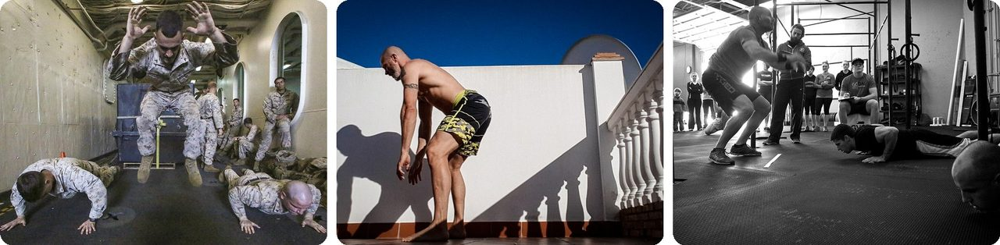
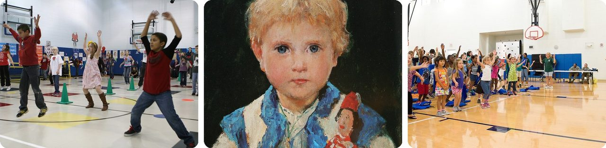
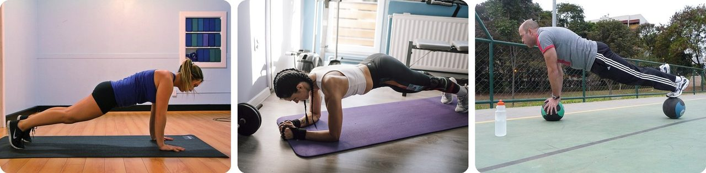

🌍 톱 10 집에서 하는 운동과 아이들을 위한 짧은 운동
2026년 11월 20일
1. 🇷🇺 케틀벨은 원래 시장에서 쓰던 저울추였어요
 1700년대 러시아에서 기랴(girya, 손잡이 달린 무쇠 공)는 운동 기구가 아니었어요. 상인들이 시장에서 곡식 무게를 재는 추로 썼어요.
1700년대 러시아에서 기랴(girya, 손잡이 달린 무쇠 공)는 운동 기구가 아니었어요. 상인들이 시장에서 곡식 무게를 재는 추로 썼어요.
1800년대가 되자 서커스 차력사들이 관객 앞에서 이걸 휘둘렀고, 곧 사람들도 운동으로 들기 시작했어요. 기본 무게는 1 푸드(pood)인데, 옛 러시아 단위로 약 16kg(36파운드)이에요. 평균적인 4살 아이 몸무게쯤이죠.
여기서 비밀 하나: 무게 대부분이 손아귀 안이 아니라 손 바깥쪽에 있어요. 그래서 케틀벨 스윙을 할 때 힘은 팔로 들어 올리는 게 아니라 엉덩이를 앞으로 확 밀어내는 데서 나와요.
한마디로, 시장 저울추가 헬스장으로 도망간 거예요.
2. 🏴 덤벨은 한 번도 울리지 않는 종이에요
 1600년대 잉글랜드에서는 교회 종 치기가 취미로 인기를 끌었고, 사람들은 종을 흉내 낸 운동 기계를 집에 들여놓기 시작했어요. 무게가 달린 막대 두 개를 엇갈려 축에 끼워 돌리고, 아래로 늘어진 밧줄을 당기는 방식이었어요.
1600년대 잉글랜드에서는 교회 종 치기가 취미로 인기를 끌었고, 사람들은 종을 흉내 낸 운동 기계를 집에 들여놓기 시작했어요. 무게가 달린 막대 두 개를 엇갈려 축에 끼워 돌리고, 아래로 늘어진 밧줄을 당기는 방식이었어요.
밧줄을 당기면 진짜 종을 치는 느낌이 났지만, 종이 없으니 아무 소리도 안 났어요. 옛 영어에서 소리 없는 걸 "dumb"(벙어리) 라고 했어요. 1711년에 작가 조지프 애디슨이 '더 스펙테이터'라는 잡지에 "dumb bell"로 운동한 이야기를 썼어요.
그런데 손에 무게를 들고 운동하는 생각은 훨씬 더 오래됐어요. 고대 그리스 사람들은 할테레스(halteres)라는 손 추를 썼고, 멀리뛰기할 때도 들고 뛰었대요.
다시 말해, 종을 빼 버린 종 치기 연습이에요.
3. 🇺🇸 버피는 심장을 빠르게 검사하려고 만든 동작이에요

1939년, 로열 H. 버피(Royal H. Burpee)라는 미국 과학자가 컬럼비아 대학교 박사 과정에서 이 동작을 만들었어요. 원래 버전은 딱 네 단계였어요. 쪼그려 앉아 손을 바닥에 짚고, 발을 뒤로 차서 플랭크 자세를 만들고, 다시 발을 당겨 오고, 일어서요.딱 네 번만 했어요. 그다음 심장 박동을 재서 심장이 얼마나 빨리 진정되는지 봤는데, 그걸로 심장이 피를 얼마나 잘 뿜는지 알 수 있었어요.
1942년 미국 육군은 이걸 속도 시험으로 바꿨어요. 20초 동안 몇 개? 8개면 나쁨, 13개 이상이면 아주 좋음이었어요. 지금 기록은 1분에 가슴이 바닥에 닿는 버피 38개로, 대략 1.6초에 하나꼴이에요.
의사의 건강 검진이 모두가 싫어하면서도 하는 운동이 된 거예요.
4. 🇺🇸 팔벌려뛰기의 영어 이름은 줄 달린 장난감에서 왔어요

"점핑 잭(jumping jack)"은 원래 나무로 만든 꼭두각시 장난감이었어요. 줄을 당기면 팔다리가 양옆으로 쫙 벌어지고, 놓으면 탁 하고 다시 모여요.사람들이 똑같은 동작을 운동으로 하면서 장난감 이름을 빌려 왔어요. 널리 알려진 이야기로는, 1885년 웨스트포인트 사관학교의 상급생 존 "블랙 잭" 퍼싱이 신입생들에게 이 동작을 시키면서 보이지 않는 줄을 당기는 시늉을 했대요.
기록은 1분에 팔벌려뛰기 136개로, 2023년 네팔에서 세워졌어요. 1초에 두 개가 넘는 속도예요.
하나 할 때마다 줄 달린 인형 흉내를 내는 셈이에요.
5. 🇯🇵 타바타 운동은 통째로 4분이면 끝나요
 1996년, 일본의 다바타 이즈미(田畑泉) 교수는 올림픽 스피드스케이팅 선수들에게 아주 짧은 운동을 시켜 봤어요. 실내 자전거를 20초 동안 있는 힘껏 밟고, 10초 쉬고, 이걸 8번 반복해요. 합쳐서 4분이에요.
1996년, 일본의 다바타 이즈미(田畑泉) 교수는 올림픽 스피드스케이팅 선수들에게 아주 짧은 운동을 시켜 봤어요. 실내 자전거를 20초 동안 있는 힘껏 밟고, 10초 쉬고, 이걸 8번 반복해요. 합쳐서 4분이에요.
6주 뒤, 이 선수들의 지구력은 매일 60분씩 일정한 속도로 자전거를 탄 그룹만큼 좋아졌어요. 게다가 짧게 전력으로 치고 나가는 힘이 좋아진 건 4분 그룹뿐이었어요.
연구에서는 자전거를 썼지만, 지금은 이 "20초 운동, 10초 휴식" 시계를 온갖 동작에 써요.
유행가 한 곡보다 짧은 운동 한 세트라고 생각하면 돼요.
6. 🇺🇸 더블 더치는 뉴욕 길거리에서 빨랫줄로 시작됐어요
 더블 더치는 두 사람이 긴 줄 두 개를 서로 반대 방향으로 돌리고, 한 사람이 그 사이에서 뛰는 줄넘기예요. 1940~50년대 뉴욕의 흑인 여자아이들이 이걸 길모퉁이 스포츠로 만들었는데, 빨랫줄을 줄넘기로 쓰는 일이 많았어요.
더블 더치는 두 사람이 긴 줄 두 개를 서로 반대 방향으로 돌리고, 한 사람이 그 사이에서 뛰는 줄넘기예요. 1940~50년대 뉴욕의 흑인 여자아이들이 이걸 길모퉁이 스포츠로 만들었는데, 빨랫줄을 줄넘기로 쓰는 일이 많았어요.
1970년대 초에 뉴욕 경찰관 율리시스 윌리엄스와 데이비드 워커가 공식 규칙을 만들었고, 1974년에 첫 정식 대회가 열렸어요. 2009년에는 뉴욕시 공립 고등학교의 정식 학교 대표 종목이 됐어요.
이름은 옛 영어 속어에서 왔을 수도 있어요. "double Dutch"는 도무지 알아들을 수 없는 말을 뜻했는데, 줄 두 개가 보기에 얼마나 헷갈리는지 놀리는 말이었던 거죠.
쉽게 말해, 줄도 두 배, 리듬도 두 배인 줄넘기예요.
7. 🇦🇺 훌라후프 열풍은 호주의 대나무 고리에서 시작됐어요
 호주 시드니의 한 선생님이 체육 시간에 학생들에게 대나무 고리를 허리에 돌리게 했어요. 고리가 너무 인기를 끌자 호주의 한 장난감 회사가 1957년에 플라스틱으로 만들기 시작했고, 그해에만 40만 개를 팔았어요.
호주 시드니의 한 선생님이 체육 시간에 학생들에게 대나무 고리를 허리에 돌리게 했어요. 고리가 너무 인기를 끌자 호주의 한 장난감 회사가 1957년에 플라스틱으로 만들기 시작했고, 그해에만 40만 개를 팔았어요.
그다음 미국 회사 웜오(Wham-O)가 자기네 플라스틱 버전을 만들었고, 엉덩이를 흔드는 하와이 춤 훌라를 따서 훌라후프라는 이름을 붙였어요. 1958년에 한 개 1.98달러였어요.
그다음 벌어진 일은 정말 놀라웠어요. 넉 달도 안 돼서 2,500만 개가 팔렸어요. 하루에 약 20만 개씩이에요.
체육 시간 장난감이 인터넷도 없던 시절에 대박이 난 거예요.
8. 🇺🇸 트램펄린은 스페인어 '다이빙 보드'에서 이름을 따왔어요
 1936년, 아이오와 대학교 체조 선수 조지 니슨과 래리 그리스월드는 서커스 공중그네 곡예사들이 안전 그물에서 튀어 오르는 걸 봤어요. 둘은 쇠틀에 용수철로 캔버스 천을 팽팽하게 걸어서 최초의 현대식 트램펄린을 만들었어요.
1936년, 아이오와 대학교 체조 선수 조지 니슨과 래리 그리스월드는 서커스 공중그네 곡예사들이 안전 그물에서 튀어 오르는 걸 봤어요. 둘은 쇠틀에 용수철로 캔버스 천을 팽팽하게 걸어서 최초의 현대식 트램펄린을 만들었어요.
1930년대 말 멕시코에서 시범을 보이던 니슨은 '다이빙 보드'라는 뜻의 스페인어 trampolín(트람폴린) 을 듣고 그걸 이름으로 정했어요.
놀라운 점은 매트 자체는 거의 늘어나지 않는다는 거예요. 가장자리 용수철이 에너지를 모았다가 몸을 위로 튕겨 줘요. 제2차 세계대전 때 미 해군은 조종사들이 공중에서 돌 때 어디가 위인지 익히도록 트램펄린을 쓰기도 했어요.
그러니까 튀는 힘은 매트가 아니라 용수철에 살고 있어요.
9. 🇺🇸 미국 대통령의 주치의가 6파운드짜리 공으로 하는 경기를 만들었어요
 허버트 후버가 1928년 대선에서 이긴 뒤, 주치의 조엘 T. 분은 대통령의 건강을 지키고 싶었어요. 그래서 후버가 해군 전함에서 수병들이 하는 걸 본 놀이를 바탕으로 후버볼을 만들었어요.
허버트 후버가 1928년 대선에서 이긴 뒤, 주치의 조엘 T. 분은 대통령의 건강을 지키고 싶었어요. 그래서 후버가 해군 전함에서 수병들이 하는 걸 본 놀이를 바탕으로 후버볼을 만들었어요.
배구랑 비슷한데, 무거운 메디신 볼을 받아서 8피트(2.4m) 높이 그물 너머로 다시 던져야 해요. 공 무게는 약 6파운드(2.7kg)로 작은 볼링공쯤이에요. 점수는 테니스처럼 매겨요.
지금도 사람들이 이 경기를 해요. 아이오와주 웨스트브랜치에서 해마다 전국 선수권 대회가 열려요.
볼링공을 받아야 하는 배구를 떠올려 보세요.
10. 🇨🇿 플랭크 세계 기록은 학교에 있는 하루보다 길어요

플랭크는 쉬워 보여요. 팔뚝과 발끝으로 버티며 팔굽혀펴기 자세를 유지하고, 움직이지 않으면 돼요. 그런데 가만히 있기 때문에 배, 등, 어깨 근육이 내내 일해야 해요.2023년 5월, 체코의 요세프 샬레크는 9시간 38분 47초 동안 플랭크를 버텼어요. 학교에서 보내는 하루 전체보다 길어요.
복근에만 좋은 것도 아니에요. 270개의 연구를 모아 본 큰 분석에서 플랭크나 벽 스쿼트처럼 가만히 버티는 운동이 다른 운동보다 혈압을 더 잘 낮춘다는 결과가 나왔어요.
바닥이랑 눈싸움 대결을 한다고 생각해 보세요.
재미있는 사실
케틀벨과 덤벨에게는 사촌이 있었어요. 바로 인디언 클럽으로, 인도와 페르시아의 병사들이 힘을 기르려고 휘둘렀다고 알려진 나무 곤봉이에요. 전통적인 건 무게가 35kg(77파운드)까지 나갔지만, 나중에 영국군은 2kg(4.4파운드)짜리 가벼운 버전을 썼고, 곤봉 휘두르기는 1904년과 1932년 올림픽 종목이기도 했어요. 그러다 1800년대에 드윗 쿡이라는 사람이 이걸로 저글링을 하기 시작했고, 오늘날 공연자들이 던지는 저글링 곤봉이 여기서 나왔어요. 서커스 묘기와 저글링에는 이런 놀라운 이야기가 훨씬 더 많이 숨어 있어요.
사진 출처 (Wikimedia Commons)
- #1: Kettlebell truebalance romeike.jpg by Detlef Romeike, CC BY-SA 2.5
- #1: Competition kettlebell 16 kilo.jpg by Knuckles, CC BY-SA 3.0
- #1: Kettlebell voor fitness 6 kg.jpg by Richardkiwi, CC BY-SA 4.0
- #2: Colorful dumbbells of various sizes.jpg by Ser Amantio di Nicolao, CC BY-SA 4.0
- #2: Rudolf Ismayr's Dumbbells, 1936.jpg by New York-air, CC BY-SA 4.0
- #2: Kurzhanteln 2 x 15 kg 2v2.jpg by Singlespeedfahrer, CC0
- #3: Airborne Burpee.jpg by Marine Corps photo by Sgt. Ryan Young, Public domain
- #3: Burpee 2 Squat.jpg by Taco fleur, CC BY-SA 4.0
- #3: CrossFit Open 12.1 - Burpees - Chris, Shane, and Adam, and Matt.jpg by Travis Isaacs (photos · photo sets), CC BY 2.0
- #4: Elementary school students conduct jumping jacks to warm up USMC-120214-M-MA421-288.jpg by Lance Cpl. Ryan M. Joyner, Public domain
- #4: Marie Anker um 1875.jpg by upload by Adrian Michael, Public domain
- #4: John Walters, right, a physiologist with the Health and Wellness Center, leads children in jumping jacks prior to participating in the Children's Mobility Line at Dover Air Force Base, Del., Aug. 22, 2013 130822-F-BO262-028.jpg by Roland Balik, Public domain
- #5: Women's 5000m Speed Skating Pair 8.jpg by Robert Scoble, CC BY 2.0
- #5: Stationary bikes at a gym.jpg by KeepActive Australia from Melbourne, VIC, Australia, CC BY-SA 4.0
- #5: A session of a boot camp exercise at Orji Flyover Owerri, Imo State.jpg by Dolphyb, CC BY-SA 4.0
- #6: Michelle Obama and kids double-dutch jump rope - P071511CK-0303 (6047842208).jpg by The White House from Washington, DC, Public domain
- #6: Double Dutch - The Ropestylers 3.jpg by Brandon Mongila, CC BY-SA 4.0
- #6: Elders of National Double Dutch League Performing.jpg by Kbwords, CC BY-SA 4.0
- #7: Girl twirling Hula Hoop, 1958.jpg by GeorgeLouis, CC BY-SA 3.0
- #7: One hula hoop (flickr) by quinn.anya, CC BY-SA 2.0
- #7: Hula Hoop OBS.jpg by Schorle, CC BY-SA 4.0
- #8: Girl jumping on trampoline with belts.jpg by Dmitry Rozhkov, CC BY-SA 3.0
- #8: Trampoline jump king.JPG by Øyvind Holmstad, CC0
- #8: Dian Nissen jumping at a trampoline park.jpg by Triffis, CC BY-SA 3.0
- #9: Hooverball Game on White House Lawn - DPLA - 7489e19fdef6a93ca88e3fe4f391f0c2.jpg by National Archives and Records Administration. Office of Presidential Libraries. Herbert Hoover Library. 4/1/1985, Public domain
- #9: MALS-24 latches onto Hooverball 130125-M-RT812-198.jpg by Christine Cabalo, Public domain
- #9: Herbert Hoover NHS - Hooverball trophies.jpg by Ser Amantio di Nicolao, CC BY-SA 4.0
- #10: Plank.jpg by Jaykayfit, CC BY-SA 3.0
- #10: Woman performing plank exercise at home gym.jpg by Shixart1985, CC BY 2.0
- #10: Medicine Ball Plank.jpg by Jgcastor, CC BY-SA 3.0


.jpg){kind=link}